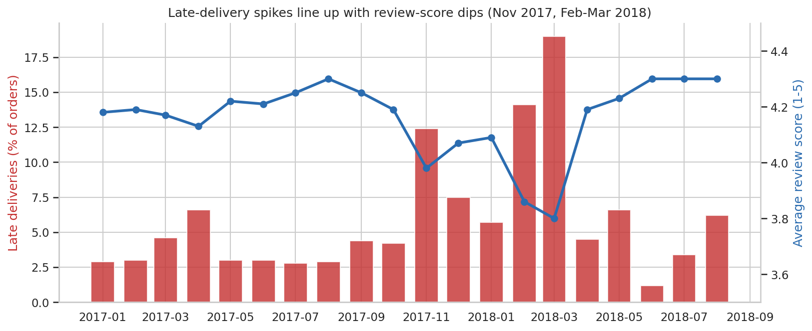
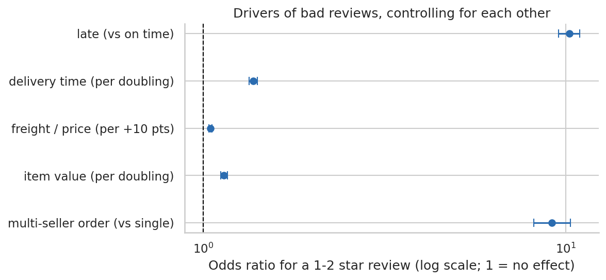
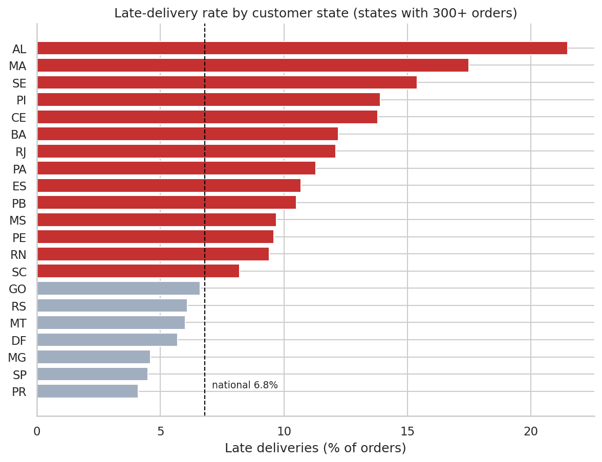
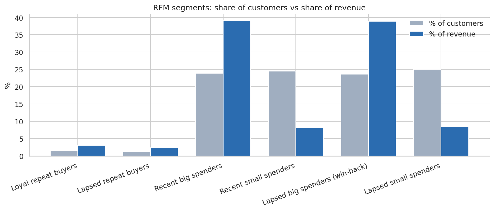

My earlier SQL project used synthetic data, so I wanted one where nothing was generated. The Olist dataset is real, anonymised order data across nine related tables: orders, items, payments, reviews, customers, sellers and products. I audited it first, cleaned it in SQL views, then asked five questions: how did the business grow, where does delivery fail, does late delivery really hurt reviews, where does revenue concentrate, and who are the customers.
SQL · Python · Statistics
Olist e-commerce analytics
A SQL and Python analysis of 96,000 real orders from a Brazilian online marketplace: why customers leave bad reviews, where delivery breaks down, and why 97% of customers never come back. Real, public data, so every number can be reproduced.

Late-delivery spikes (Nov 2017, Feb–Mar 2018) line up with the dips in average review score.
Overview
Key findings
2.26average review score for late orders (6,531), against 4.28 for on-time orders (89,672)
≈10×higher odds of a 1–2 star review for late orders, after controlling for delivery time, freight cost, item value and multi-seller orders
3.91average score for orders that took 21+ days but arrived on time, against 2.12 for those that were also late — the promise matters more than the wait
6.8%of orders arrived late overall, but 12.4% in Nov 2017 and 14–19% in Feb–Mar 2018
79%of orders arrive 7+ days before the promised date, so the delivery estimates are heavily padded
97%of customers ordered only once; returning customers stayed at about 2.5% of monthly revenue
67%of GMV comes from the top 10% of sellers
39%of revenue sits with 21,979 lapsed big spenders, the obvious win-back segment
Average review score by delivery vs the promised date. The score does not fall gradually — it drops sharply the moment an order misses its date.

Logistic regression for a 1–2 star review. Late delivery has by far the largest effect; freight cost barely matters.
Recommendation
- Manage the delivery promise, not just the speed. Plan capacity for November and the Feb–Mar window, and set more realistic estimates for the north-east, where 12–21% of orders arrive late even with 29–33 day promises.
- Look at multi-seller orders. They are 1.3% of orders but average only 2.85 stars despite rarely being late. Split shipments are one plausible reason, but the data cannot confirm it.
- Treat retention as the untapped lever. Growth flattened through 2018 while 97% of customers bought once. Test win-back offers on the lapsed big spenders.
- Do not blame a few sellers. Among sellers with 50+ orders, the ones with 20%+ late rates cause only 1.5% of late orders. The problem is logistics and capacity.

Late-delivery rate by customer state. North-east states such as Alagoas (21.5%) and Maranhão (17.5%) are far above São Paulo (4.5%).
How it's built
- SQL: all nine tables loaded into a local DuckDB database using PostgreSQL-compatible SQL. One audit file, one cleaning-views file and five analysis files, using joins, CTEs,
LAG(),RANK(),NTILE(),ROW_NUMBER(), running totals, moving averages and percentiles. - Data cleaning:
customer_idis created per order, so I usedcustomer_unique_id(99,441 ids vs 96,096 real customers); kept one review per order where 555 had several; excluded 166 orders with a carrier date before the purchase date; labelled 610 products with no category instead of dropping them. - Python: SQL results pulled into pandas, then a Mann-Whitney test, a chi-square test and a logistic regression (statsmodels), with charts in matplotlib and seaborn.
- Reproducible: a build script checks every table against the official row count, and the headline numbers are written to a file by the notebook rather than typed by hand.

RFM segments: share of customers against share of revenue.
Limits of the data
This is observational data, so the late-delivery effect is a strong association that survives controls, not proof of cause. Reviews are voluntary and unhappy customers write far more comments, so scores are not a random sample. GMV is item price, not Olist's own revenue. The data covers one marketplace in one country from 2016 to 2018, with no cost or marketing data. Because 97% of customers bought once, RFM recency mostly reflects when someone first ordered. A bad first review did not significantly reduce repeat purchases (4.6% vs 5.2%, p = 0.38), so I report that as a null result.
Source: Olist Brazilian E-Commerce Public Dataset on Kaggle.
What I'd add next
Text-mine the review comments, especially for late and multi-seller orders, to see what customers actually complain about. Then build a model that predicts which orders will be late from seller location, customer location and category, so the business could act before the promise is missed.